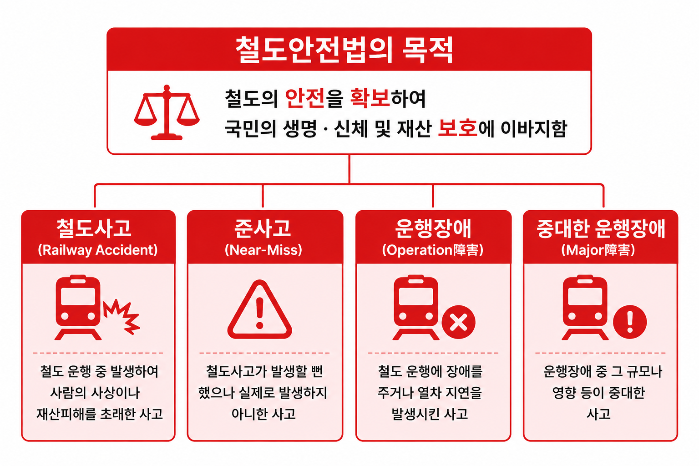
철도안전법 목적·용어 개념도
목적: 철도사고 예방과 피해 경감, 공공복리 증진, 국민의 생명·신체·재산 보호
| 용어 | 정의 | 함정 |
|---|---|---|
| 철도사고 | 사망·부상 또는 물건 파손을 일으킨 사고 | |
| 준사고 | 사고는 아니나 사고로 이어질 수 있었던 것 | 사고≠준사고 |
| 운행장애 | 열차운행을 방해하는 상황 | |
| 중대한 운행장애 | 사상자(사망·부상자) 발생 또는 5억원 이상 재산피해 | 어느 하나만 해당 (OR) ✅ |
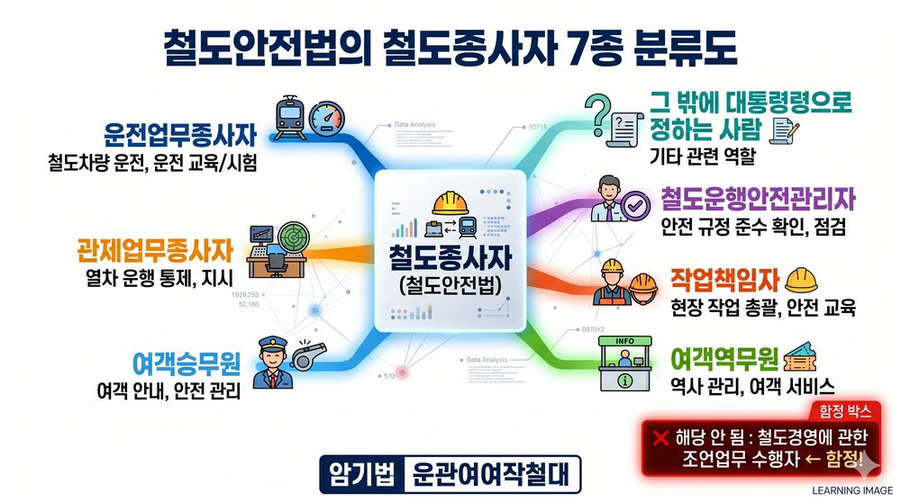
철도종사자 7종 분류도
운전 → 관제 → 여객승무원 → 여객역무원 → 작업책임자 → 철도운행안전관리자 → 대통령령
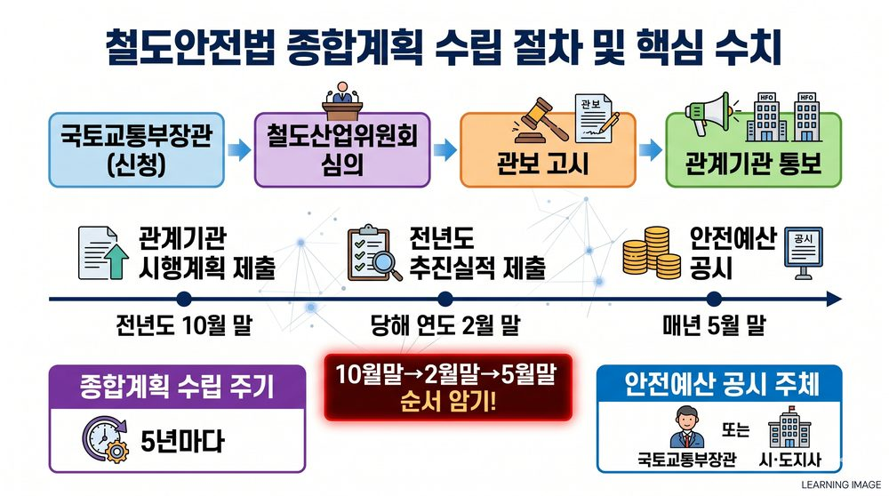
종합계획 수립절차 타임라인
| 항목 | 수치 | 함정 |
|---|---|---|
| 수립 주기 | 5년마다 | 3년 ❌ |
| 수립 주체 | 국토교통부장관 | |
| 시행계획 제출 기한 | 전년도 10월 말 | 11월 말 ❌ |
| 추진실적 제출 기한 | 2월 말 | 3월 말 ❌ |
| 안전예산 공시 기한 | 5월 말 | |
| 안전예산 공시 주체 | 국토교통부장관 또는 시·도지사 | 국토부장관만 ❌ |
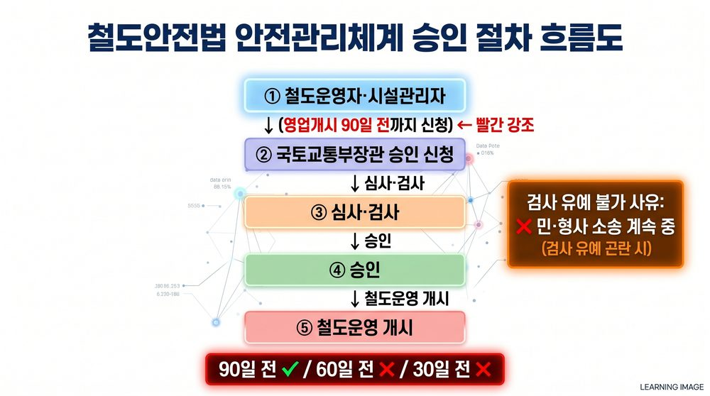
안전관리체계 승인절차
검사 유예 불가 사유: 민·형사 소송 계속 중 (기출 함정!)
| 변경 구분 | 절차 | 대상 | 기한 |
|---|---|---|---|
| 변경승인 | 국토교통부장관 승인 필요 | 중요한 사항 변경 | — |
| 변경신고 | 국토교통부장관에게 신고 | 경미한 사항 변경 | 변경 사유 발생 후 14일 이내 |
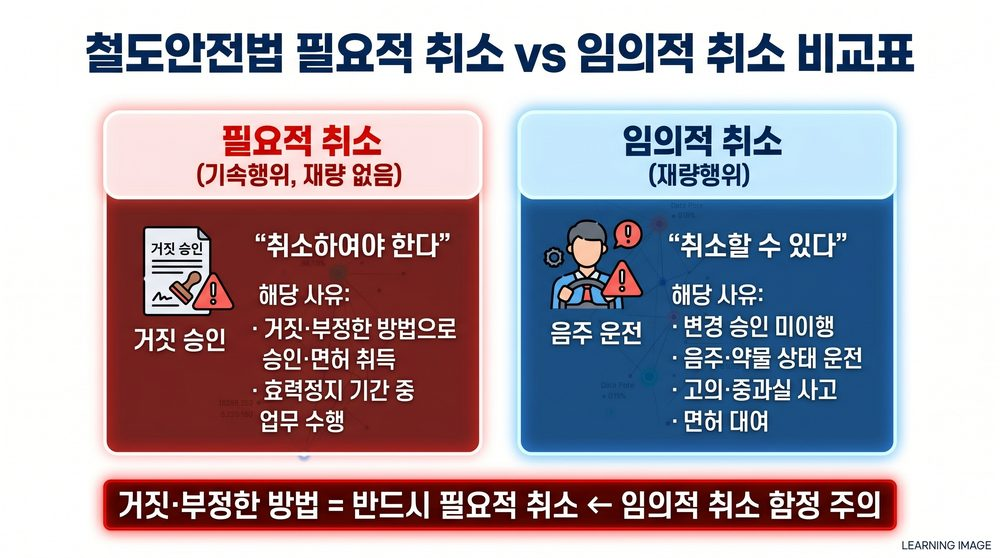
필요적·임의적 취소 비교
| 구분 | 사유 | 법 표현 |
|---|---|---|
| 필요적 취소 | 거짓·부정한 방법으로 승인 | 취소하여야 한다 |
| 임의적 취소 | 변경승인 미이행 | 취소할 수 있다 |
| 임의적 취소 | 안전관리체계 지속 미유지 | 취소할 수 있다 |
| 임의적 취소 | 시정조치 미이행 | 취소할 수 있다 |
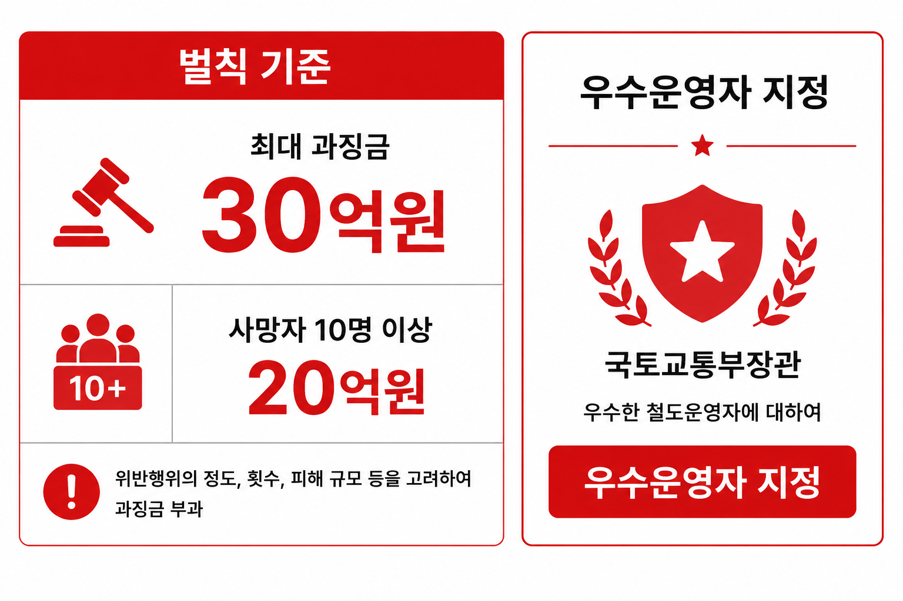
과징금·우수운영자 수치
| 항목 | 내용 | 함정 |
|---|---|---|
| 과징금 최대 한도 | 30억원 | 50억원 ❌ |
| 사망자 10명 이상 | 20억원 | 30억원 ❌ |
| 우수운영자 지정 주체 | 국토교통부장관 | 지방자치단체장 ❌ |
| 안전관리수준평가 | 실시할 수 있다 (임의) | 의무(하여야) ❌ |
| 과징금 납부기한 | 부과일부터 20일 이내 | 30일 ❌ |

운전면허 6종 분류표
| 법정 면허 명칭 (시행령 제11조) | 대상 차량 | 특이사항 |
|---|---|---|
| 고속철도차량 운전면허 | 고속철도차량 (KTX 등) | |
| 제1종 전기차량 운전면허 | 간선철도·광역전철 전동차 | |
| 제2종 전기차량 운전면허 | 도시철도 전동차 | |
| 디젤차량 운전면허 | 디젤기관차·동차 | |
| 철도장비 운전면허 | 선로보수 등 장비 | |
| 노면전차 운전면허 | 노면전차 | ⚠️ 도로교통법 운전면허도 필요 |
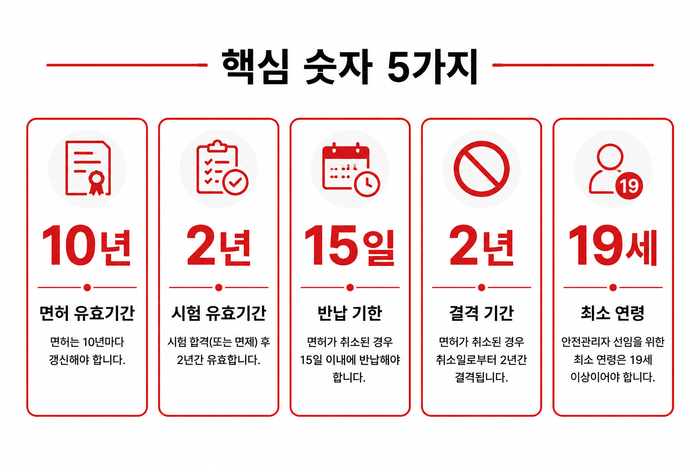
운전면허 핵심 수치 5개
| 항목 | 수치 | 함정 |
|---|---|---|
| 면허 유효기간 | 10년 | 5년 ❌ |
| 필기시험 합격 유효기간 | 2년 | 1년 ❌ |
| 취소 후 면허증 반납 기한 | 15일 이내 | 30일 ❌ |
| 결격: 취소 후 경과 기간 | 2년 미경과 | 5년 ❌ |
| 결격: 최저 나이 | 19세 미만 |
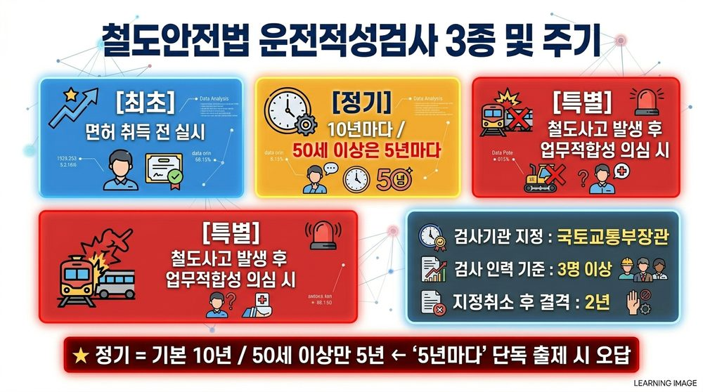
운전적성검사 3종 주기
| 종류 | 시기 | 함정 |
|---|---|---|
| 최초 | 면허 취득 전 | |
| 정기 | 10년마다 (50세 이상 5년마다) | 모두 5년 ❌ |
| 특별 | 철도사고 발생 후 / 업무적합성 의심 시 |
| 항목 | 내용 |
|---|---|
| 검사인력 기준 | 3명 이상 |
| 지정취소 후 결격 | 2년 |
| 관제 실무수습 | 100시간 |
| 제1종 전기차량 실무수습 | 400시간 또는 8,000km |
| 운전교육훈련기관 지정기준 | 상설 전담조직 필수 (임시 조직 ❌) |
| 디젤차량 면허 교육시간 (일반) | 340시간 |
| 제1종 전기차량 면허 교육시간 (일반) | 470시간 |
| 검사방식 | 포함 항목 | 합격기준 |
|---|---|---|
| 반응형 | 주의력·민첩성 등 5개 항목 | 합계 70점 이상 & 항목별 30점 이상 |
| 문답형 | 인성검사만 | 적합 / 부적합 판정 |
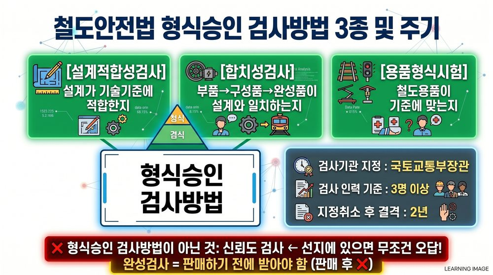
형식승인 검사방법 3종
| 검사방법 | 내용 |
|---|---|
| 설계적합성검사 | 설계가 기술기준에 적합한지 검사 |
| 합치성검사 | 부품→구성품→완성품이 설계와 합치하는지 |
| 용품형식시험 | 철도용품이 기준에 맞는지 시험 |
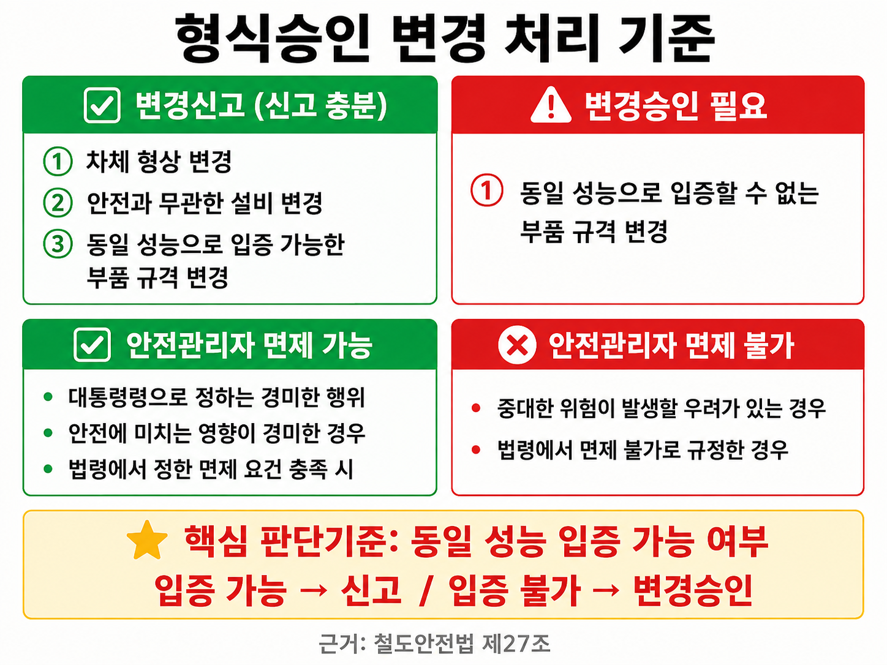
형식승인 경미 사항·면제 비교
| 구분 | 내용 |
|---|---|
| 신고 충분 (경미) | 차체형상 변경, 안전과 무관 설비, 입증가능 부품 규격 변경 |
| 변경승인 필요 | 동일성능으로 입증할 수 없는 부품 규격 변경 |
| 면제 가능 | 면제 불가 |
|---|---|
| 시험·연구·개발 목적 | 중량분포에 영향 안 미치는 장치·부품 |
| 수출 목적 |
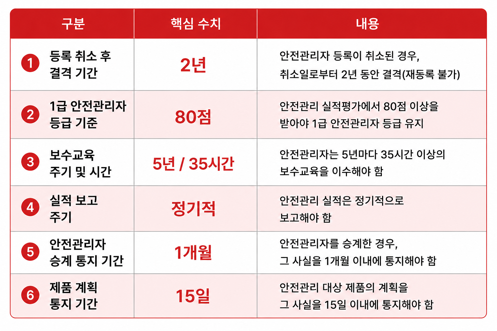
정비조직·기술자·이력 수치표
| 항목 | 내용 | 함정 |
|---|---|---|
| 정비조직 인증취소 후 결격 | 2년 | 5년 ❌ |
| 기술자 1등급 기준 | 80점 이상 | |
| 기술자 보수훈련 | 5년마다 35시간 | 20·25·30시간 ❌ |
| 열차조성업무 종사자 직무교육 | 5년마다 21시간 | 35시간 ❌ (기술자와 혼동) |
| 이력 보고 주기 | 정기적으로 | 매월 ❌ |
| 지위 승계 신고 | 승계일부터 1개월 이내 | |
| 철도용품 계획서 통보 | 15일 이내 | 7일 ❌ |
📷 영상보안장치
| 항목 | 내용 | 함정 |
|---|---|---|
| 설치 의무 장소 | 철도차량 내부 · 승강장 · 대합실 · 건널목 등 국토교통부령으로 정하는 장소 | 임의 설치 ❌ |
| 자료 보존 기간 | 촬영일부터 30일 이상 | 90일 ❌ |
| 금지행위 | 영상정보를 임의로 열람·제공·삭제하는 행위 | |
| 열람·제공 허용 | 철도사고 조사 / 범죄수사 / 법원 제출용 | 일상 열람 ❌ |
| 고장 시 조치 | 즉시 대체 수단 마련 + 국토교통부장관에게 보고 |
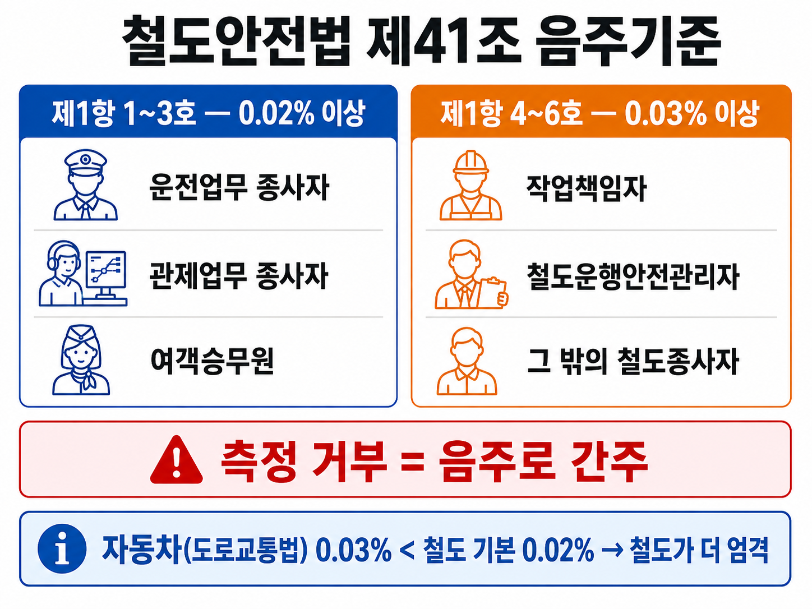
음주기준 1~3호(0.02%) · 4~6호(0.03%) 비교
| 조문 구분 | 기준 | 해당 종사자 |
|---|---|---|
| 제41조 제1항 1~3호 | 0.02% 이상 | 운전업무종사자 · 관제업무종사자 · 여객승무원 |
| 제41조 제1항 4~6호 | 0.03% 이상 | 작업책임자 · 철도운행안전관리자 · 그 밖의 철도종사자 |
| 항목 | 수치 | 함정 |
|---|---|---|
| 일반철도 보호지구 | 경계선으로부터 30m 이내 | 50m ❌ |
| 노면전차 보호지구 | 경계선으로부터 10m 이내 | 5m ❌ |
| 노면전차 신고구역 (제45조②) | 궤도 경계선 바깥 20m 이내 | 보호지구 10m와 별개 ⚠️ |
| 물건방치 금지 범위 | 궤도 중심 양측 3m 이내 | 2m·5m ❌ |
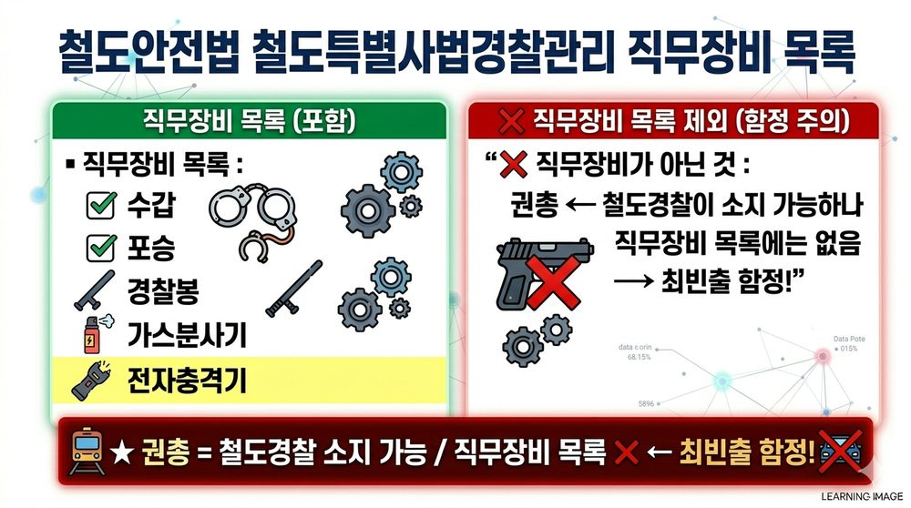
직무장비 목록 (권총 제외)
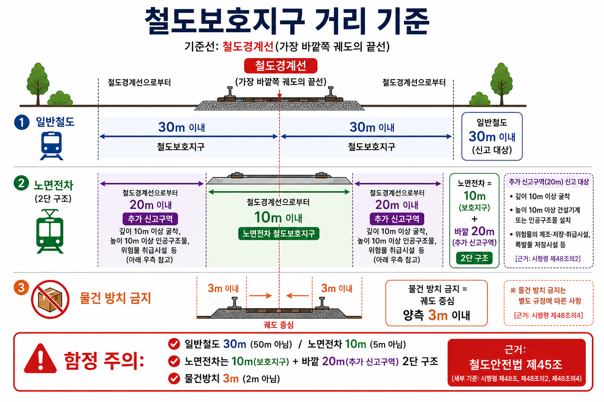
철도보호지구 거리 기준
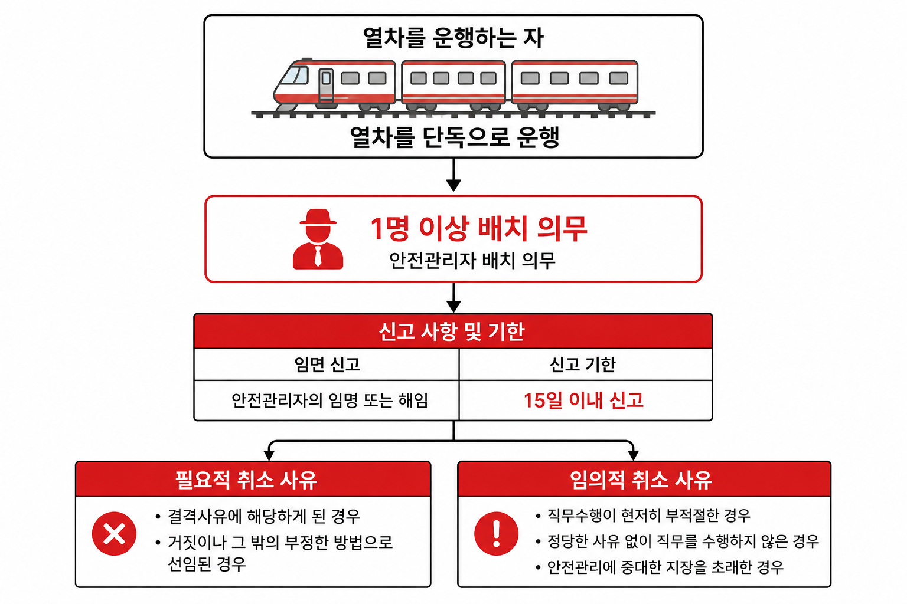
철도운행안전관리자 배치 기준
| 항목 | 내용 |
|---|---|
| 관제 제외 대상 | 신설선 또는 개량선 (정상운행 전) |
| 관제 업무 아닌 것 | 철도승객 유치를 위한 홍보 |
| 운행안전관리자 고의·중과실 사고 | 임의적 취소 (할 수 있다) |
🚦 철도운행안전관리자 배치 기준
| 항목 | 내용 | 함정 |
|---|---|---|
| 배치 의무 상황 | 철도차량이 단독으로 운행하거나 일반인이 접근할 수 있는 선로에서 운행하는 경우 | 모든 열차 ❌ |
| 배치 수 | 해당 열차 1명 이상 | |
| 자격 요건 | 국토교통부장관이 지정한 교육훈련기관에서 교육 이수 | 철도공사 자체 교육 ❌ |
| 임면 신고 | 임면일부터 15일 이내 → 국토교통부장관에게 신고 | 30일 ❌ |
| 자격증명 취소 사유 | 거짓·부정 취득 (필요적) / 고의·중과실 사고 (임의적) | 고의·중과실 = 필요적 ❌ |
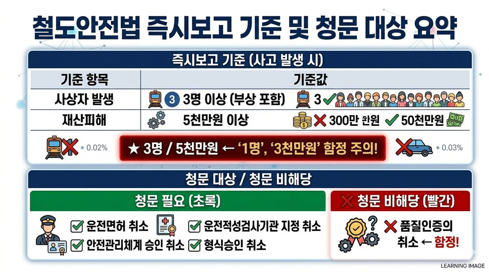
즉시보고 기준·청문대상
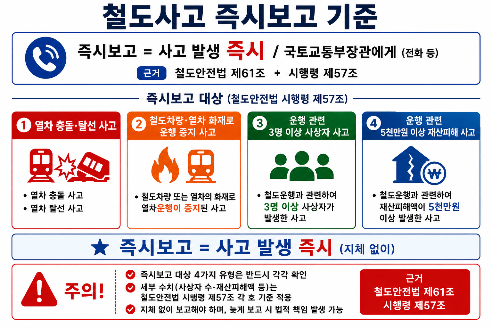
즉시보고 기준 상세
| 항목 (시행령 제57조) | 기준 | 함정 |
|---|---|---|
| 충돌·탈선 (1호) | 무조건 즉시보고 | 규모 무관 |
| 차량·열차 화재 (2호) | 운행 중지시킨 경우 | 운행 계속 시 해당 없음 |
| 사상자 (3호) | 3명 이상 | 사망자 ❌ → 사상자 ✅ |
| 재산피해 (4호) | 5천만원 이상 | 3천만원 ❌ |
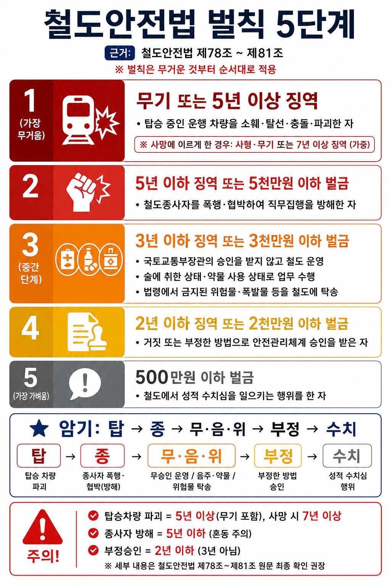
벌칙 5단계 계층표
| 벌칙 | 행위 |
|---|---|
| 사형·무기 또는 7년↑ | 탑승 운행 중 차량 소훼·탈선·충돌·파괴 |
| 5년↓ / 5천만원↓ | 폭행·협박으로 종사자 직무집행 방해 |
| 3년↓ / 3천만원↓ | 무승인 운영 / 음주약물 업무 / 금지 위험물 탁송 |
| 2년↓ / 2천만원↓ | 거짓·부정한 방법으로 안전관리체계 승인 |
| 500만원↓ | 성적 수치심을 일으키는 행위 |

철도안전법 핵심수치 통합 암기표
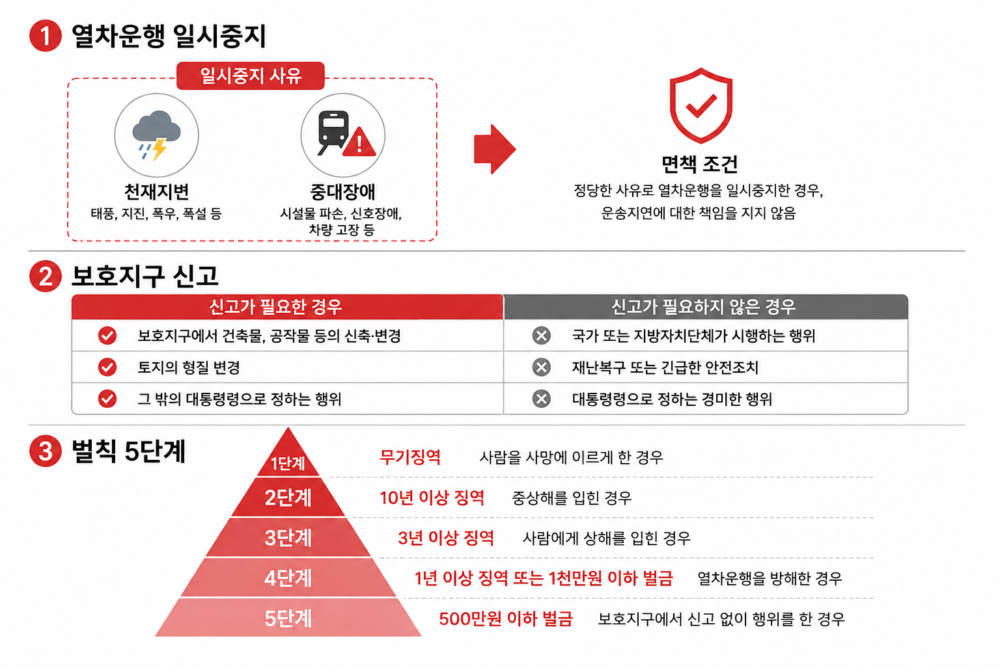
보강 3개 주제 요약
사유(발생 또는 예상): 천재지변·악천후로 인한 재해 / 열차운행에 중대한 장애.
면책: 일시중지 조치는 고의·중과실이 없으면 민사상 책임을 지지 아니한다.
| 신고 필요 | 신고 불필요(함정) |
|---|---|
| 토지 형질변경·굴착 / 토석·자갈·모래 채취 / 건축물 신·개·증축 / 인공구조물 설치 / 나무 식재(대통령령) | 건축물 리모델링 |
| 벌칙 | 행위 |
|---|---|
| 사형·무기 또는 7년 이상 | 탑 — 탑승 운행 중 차량 소훼·탈선·충돌·파괴 |
| 5년 이하 / 5천만원 이하 | 종 — 종사자 폭행·협박 직무집행 방해 |
| 3년 이하 / 3천만원 이하 | 무·음·위 — 무승인 운영 / 음주·약물 업무 / 위험물 탁송 |
| 2년 이하 / 2천만원 이하 | 부정 — 거짓·부정한 방법으로 안전관리체계 승인 |
| 500만원 이하 벌금 | 수치 — 성적 수치심을 일으키는 행위 |
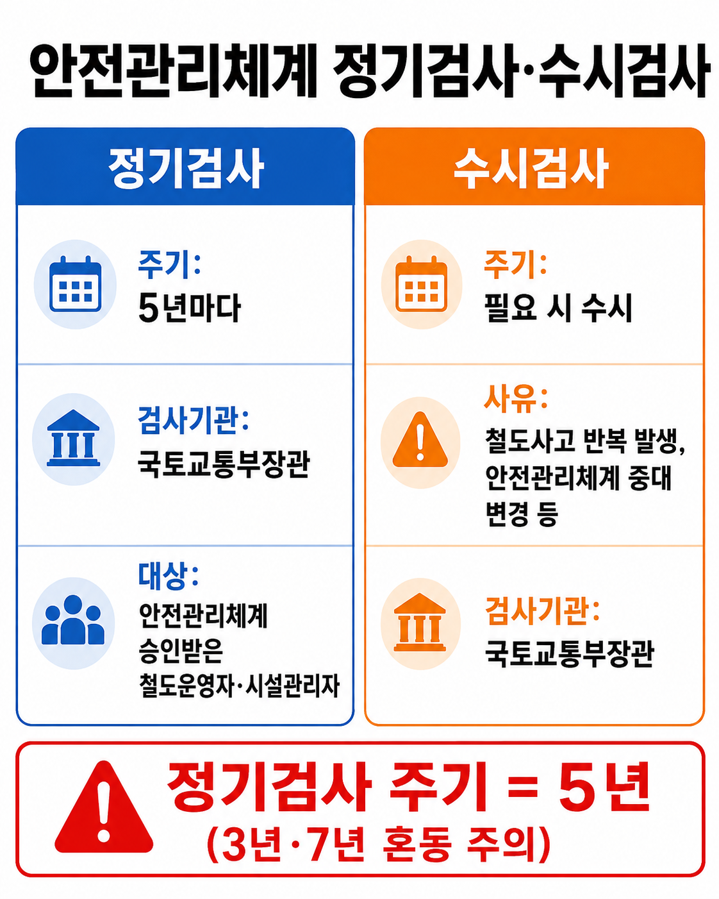
안전관리체계 정기·수시검사
| 구분 | 주기·기준 | 함정 |
|---|---|---|
| 정기검사 | 승인일부터 5년마다 | 3년 ❌ |
| 수시검사 | 필요 시 (사고 반복·중대 변경 등) | 정해진 주기 없음 |
| 검사 기관 | 국토교통부장관 | 자체 검사 ❌ |
| 결과 처분 | 시정명령 / 안전관리체계 취소 가능 |
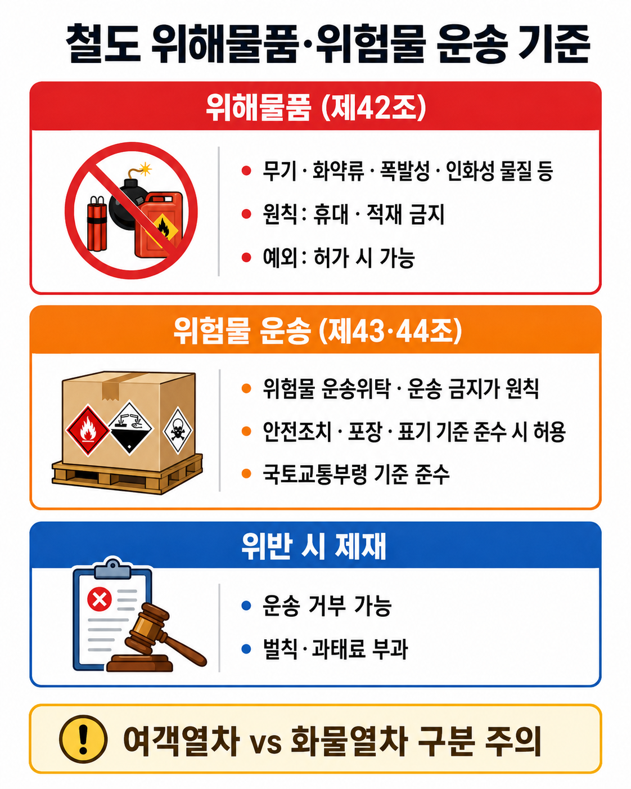
위해물품·위험물 운송 기준
| 구분 | 내용 | 함정 |
|---|---|---|
| 위해물품 (제43조) | 여객 열차 내 휴대·탁송 금지 | 화물열차 = 허가 가능 |
| 위해물품 종류 | 폭발물·인화성물질·독성가스·방사성물질 등 | |
| 위험물 (제44조) | 철도운영자 허가 필요 / 용기·포장 기준 준수 | 신고 ❌ → 허가 |
| 위반 시 | 운송 거부 가능 / 3년↓ 또는 3천만원↓ | |
| 위험물 규제 재검토 | 타당성 재검토 주기 3년 | 5년 ❌ |
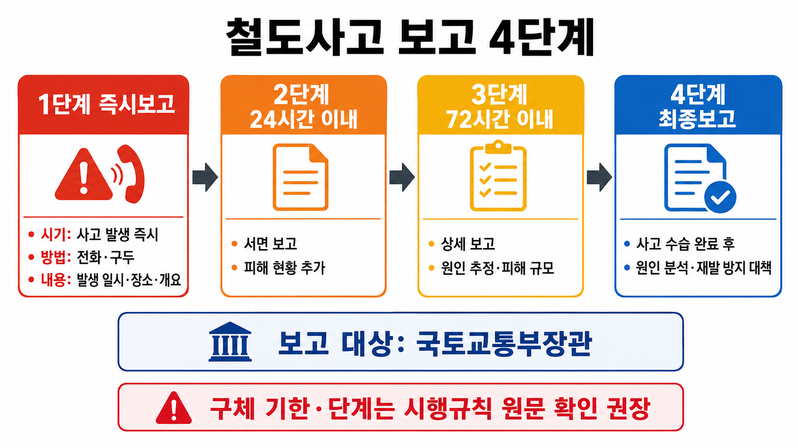
사고보고 4단계 타임라인
| 단계 | 시기 | 방법·내용 |
|---|---|---|
| 즉시보고 | 사고 발생 후 30분 이내 | 전화·구두 / 발생 일시·장소·개요 |
| 초기보고 | 중요사고 1시간 이내 / 기타 72시간 이내 | 서면 / 피해 현황·원인 추정 추가 |
| 중간보고 | 수습 중 수시 (1일 2회 이상) | 경과·대응 현황 |
| 종결보고 | 수습 완료 후 다음달 15일 이내 | 원인 분석 + 재발 방지 대책 |
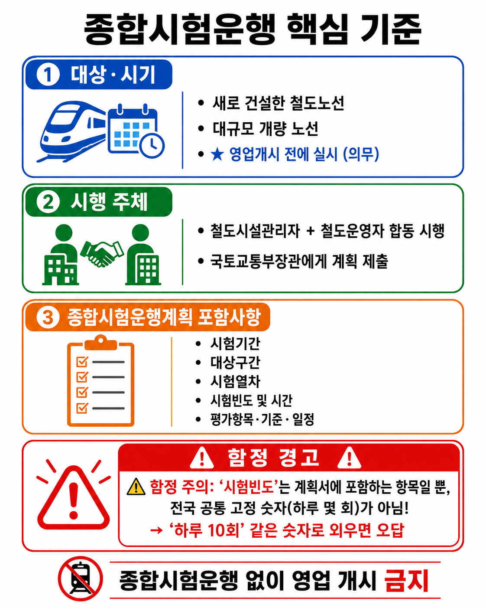
종합시험운행 기준
| 항목 | 내용 | 함정 |
|---|---|---|
| 대상 | 새로 건설·개량한 철도노선 — 영업 개시 전 | 기존 노선 소규모 수선 ❌ |
| 시행 주체 | 철도운영자 (국토교통부장관 확인) | 국토부가 직접 ❌ |
| 주요 함정 | 종합시험운행 없이 영업 개시 = 금지 | 생략 가능 ❌ |
| 완성검사 | 종합시험운행 후 완성검사 → 영업 개시 | 순서 혼동 주의 |
| 부품공급 | 철도차량 부품 제조·공급자도 형식승인 필요 | 신고만으로 불가 ❌ |
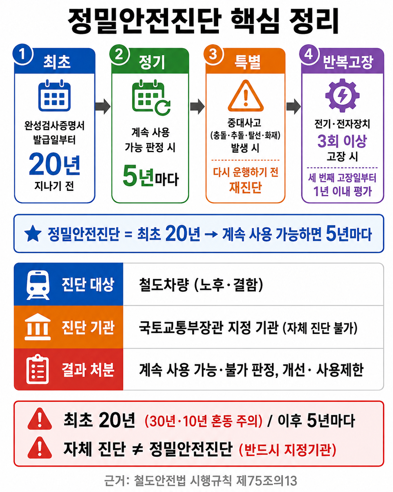
정밀안전진단 기준
| 항목 | 내용 | 함정 |
|---|---|---|
| 최초 진단 시기 | 사용 개시 후 20년 경과 시 | 10년 ❌ |
| 이후 주기 | 5년마다 | 10년 ❌ |
| 진단 기관 | 국토교통부장관이 지정한 기관 | 자체 진단 ❌ |
| 결과 처분 | 개선명령 / 사용제한 / 폐기 가능 |
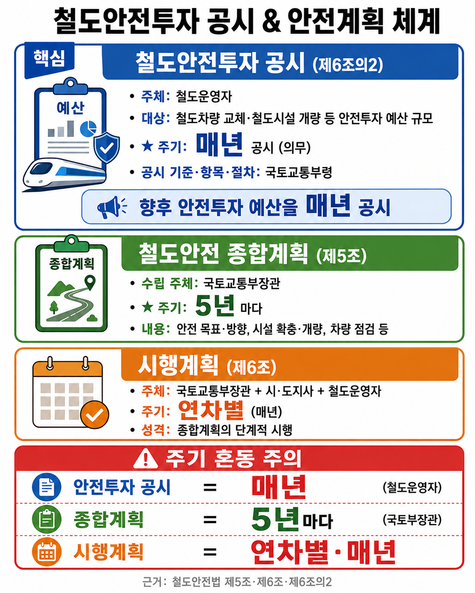
안전투자 공시
| 항목 | 내용 | 함정 |
|---|---|---|
| 공시 의무자 | 철도운영자 | 국토부가 공시 ❌ / 철도시설관리자 ❌ |
| 공시 주기 | 매년 (연 1회) | 2년·3년 ❌ |
| 공시 내용 | 안전투자 실적 및 계획 | 재무제표만 ❌ |
| 미이행 시 | 과태료 부과 |
| 항목 | 내용 | 함정 |
|---|---|---|
| 철도표준규격 제정·개정·폐지 주체 | 국토교통부장관 | 철도운영자 ❌ |
| 과징금 납부기한 | 부과일부터 20일 이내 | 30일 ❌ |
| 변경신고 기한 | 경미한 사항 변경 후 14일 이내 | 30일 ❌ |
| 제1종 전기차량 실무수습 | 400시간 또는 8,000km | 100시간 ❌ |
| 위험물 규제 재검토 주기 | 3년마다 | 5년 ❌ |
| 운전교육훈련기관 지정기준 | 상설 전담조직 필수 | 임시 조직 ❌ |
시험 함정: "대통령령"이어야 할 것을 "국토교통부령"으로, 또는 그 반대로 뒤바꿔 출제합니다.
① 대통령령(시행령)으로 정하는 사항
| 사항 | 조문 | 함정 포인트 |
|---|---|---|
| 철도관계법령의 범위 (교통안전법 제외!) | 제2조 | 교통안전법 포함 여부 선지 주의 |
| 종합계획 시행계획 수립 절차 | 제5조 | |
| 과징금 위반행위 종류·부과기준·징수방법 | 제61조 | 국토교통부령으로 착각 유도 |
| 운전적성검사기관 지정기준·지정절차 | 제26조 | 국토교통부령으로 착각 유도 |
| 철도안전 전문인력 자격기준·자격부여 절차·교육훈련 | 제69조 | 국토교통부령으로 착각 유도 |
| 철도차량 운전면허의 종류 | 제21조 |
② 국토교통부령(시행규칙)으로 정하는 사항
| 사항 | 조문 | 함정 포인트 |
|---|---|---|
| 철도차량 운전면허시험 과목·절차 | 제22조 | 대통령령으로 착각 유도 |
| 출입금지 철도시설 (급유시설물 있는 장소 = 포함) | 제38조 | "급유시설물" 포함 여부 선지 주의 |
| 폭발물 등 적치금지 구역 (정거장·교량·터널·역사) | 제46조 | 대통령령으로 착각 유도 |
| CCTV(영상보안장치) 설치 장소 | 제55조 | |
| 철도안전투자 공시 기준·항목·절차 | 제6조의2 | 대통령령으로 착각 유도 |
| 정밀안전진단기관 지정기준·절차 | 제48조의3 | 대통령령으로 착각 유도 |
① 과징금 위반행위 종류 및 부과기준 (제61조)
② 철도안전 전문인력 자격기준 (제69조)
③ 운전면허 종류 (제21조)
④ 폭발물 등 적치금지 구역 (제46조)
| 포함되는 분야 (3개) | 설명 |
|---|---|
| 철도운행안전 | 열차 운행 전반의 안전 관리 |
| 전기철도 | 전기·신호 분야 안전 관리 |
| 철도신호 | 신호 시스템 안전 관리 |
① 철도운행안전 ② 전기철도 ③ 철도신호 ④ 철도토목
| 항목 | 기준 | 함정 |
|---|---|---|
| 주요부품 공급기간 | 완성검사일부터 20년 이상 | 10년·15년으로 출제 유도 |
| 의무 주체 | 철도차량 제작자·수입자 | 운영자·정비기관 ❌ |
| 근거 | 금지행위 | 제재 |
|---|---|---|
| 제47조①5호 | 철도종사자·여객 등에게 성적 수치심을 일으키는 행위 | 벌금 500만원↓ |
| 제47조①6호 | 술·약물 복용 후 다른 사람에게 위해를 주는 행위 | 벌금 500만원↓ |
| 시행규칙 제80조①1호 | 여객에게 위해 우려 동식물을 안전조치 없이 동승·휴대 | 과태료 |
| 시행규칙 제80조①2호 | 전염 우려 법정감염병자가 종사자 허락 없이 탑승 | 과태료 |
| 시행규칙 제80조①3호 | 종사자 허락 없이 판매·배부·연설·권유로 여객에게 불편 | 과태료 |
① 단순 음주는 제47조①6호로 금지된다
② 철도종사자에게 성적 수치심을 일으키는 행위는 금지된다
③ 모든 동식물 휴대는 절대 금지된다
④ 판매권유는 어떤 경우도 금지된다
| 항목 | 내용 | 함정 |
|---|---|---|
| 보상 요건 | 제45조(철도보호지구) 금지·제한 또는 조치명령으로 손실 발생 | 모든 손실 보상 ❌ |
| 보상 주체 | 법정 주체 | 승객에게만 ❌ |
| 보상 방법 | 정당한 손실 보상 | 운임 수익으로만 ❌ |
| 개정 내용 | 핵심 취지 |
|---|---|
| 노면전차 도로면허 범위 정비 | 철도면허 + 도로교통법 면허 이중 요건 법적 명확화 |
| 경찰 신호에 따른 선로 횡단 허용 | 교통경찰 지시에 따른 선로 횡단 합법화 |
| 과태료 근거 정비 | 과태료 부과 조문 체계 명확화 |